Первым шагом необходимо создать новые таблицы для хранения данных администратора, языков программирования и связей между заявками и языками.
Созданы следующие таблицы:
admins- таблица для хранения логина и хеша пароля администратораprogramming_languages- таблица-справочник языков программированияapplication_languages- таблица связи "многие-ко-многим" между заявками и языками
admins содержит запись с логином admin и хешированным паролем. Таблица programming_languages заполнена 12 языками.
Выполненные SQL-запросы:
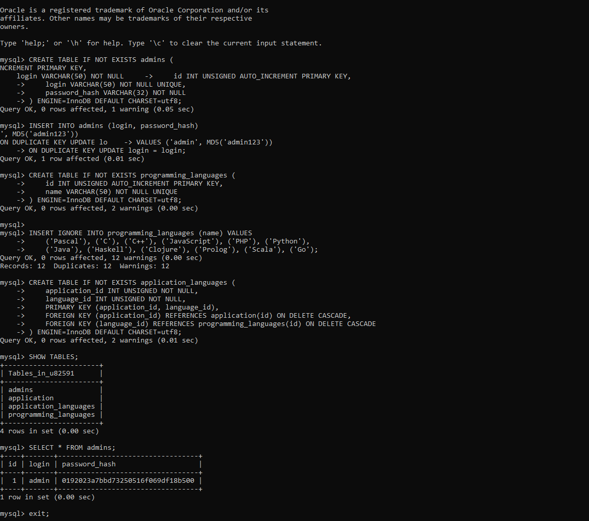
Создан новый Git-репозиторий для задания 6 и код отправлен на GitHub.
Выполненные команды:
624a083.
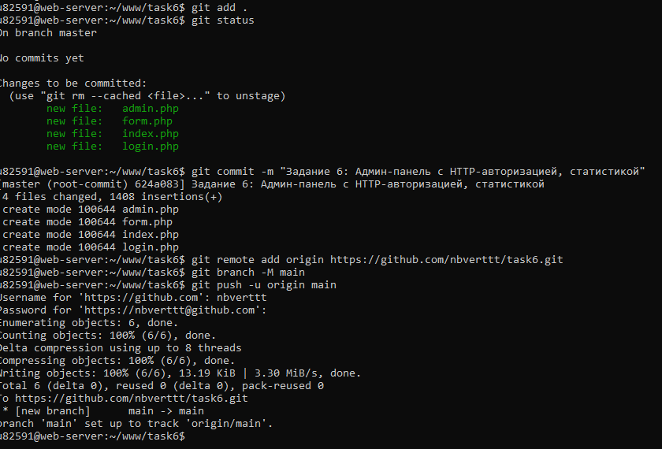
Проверка работы HTTP-авторизации через команду curl. При отсутствии авторизации сервер возвращает код 401, при правильном логине и пароле - код 200.
Как работает HTTP Basic Auth:
- Браузер отправляет запрос на сервер
- Сервер отвечает:
401 Unauthorized+ заголовокWWW-Authenticate: Basic realm="Admin panel" - Браузер показывает окно ввода логина и пароля
- При повторном запросе браузер отправляет заголовок
Authorization: Basic base64(логин:пароль) - Сервер проверяет учётные данные через таблицу
admins
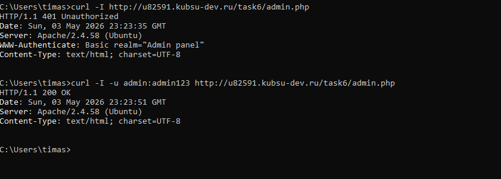
После успешной авторизации администратор видит таблицу со всеми записями пользователей и статистику по языкам программирования.
Отображаемые колонки:
- ID, ФИО, Телефон, Email, Дата рождения, Пол, Языки, Контракт, Логин
- Кнопки действий: "Изменить" и "Удалить"
Статистика:
- Общее количество пользователей: 3
- Количество по каждому языку (C: 2, C++: 2, Java: 2, JavaScript: 1, Pascal: 1, PHP: 1, Python: 1)
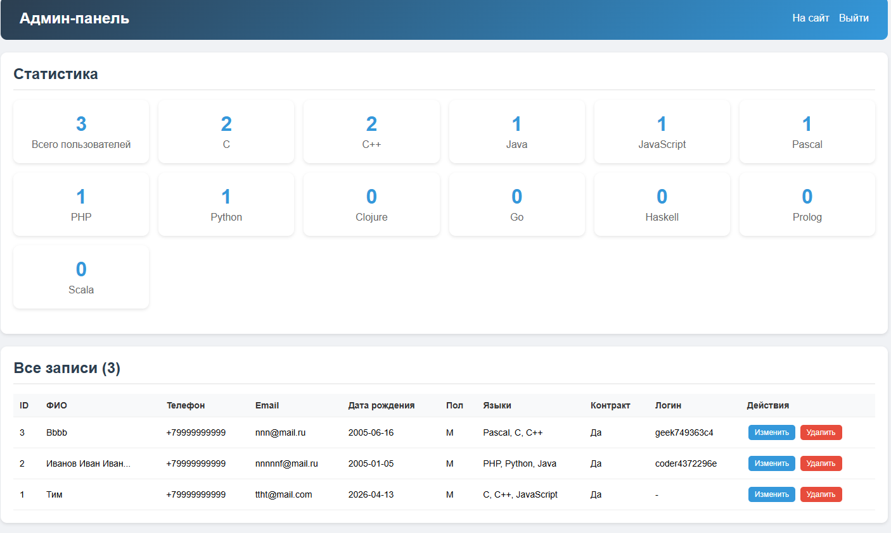
Проверка количества записей в базе данных через SQL-запрос.
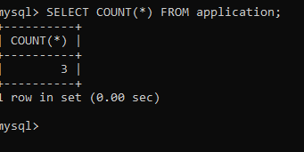
При нажатии на кнопку "Удалить" появляется диалоговое окно подтверждения. После подтверждения запись удаляется из базы данных вместе со связанными данными о языках.
Механизм удаления:
- Транзакция: сначала удаляются связи из
application_languages, затем сама запись изapplication - Каскадное удаление: внешний ключ
ON DELETE CASCADEавтоматически удаляет связанные записи - После удаления выводится сообщение об успехе
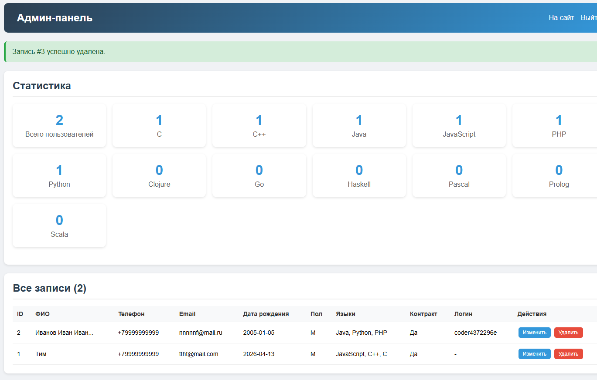
Проверка, что запись действительно удалена из базы данных.
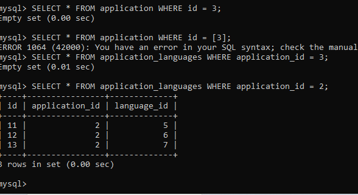
При нажатии на кнопку "Изменить" открывается форма редактирования с текущими данными записи.
Форма редактирования содержит:
- Все поля: ФИО, Телефон, Email, Дата рождения, Пол, Биография, Контракт
- Множественный выбор языков (с уже выбранными значениями)
- Кнопки "Сохранить" и "Отмена"
Процесс сохранения:
- Транзакция: UPDATE основных данных + DELETE старых связей + INSERT новых связей
- После сохранения - сообщение об успехе и обновлённая таблица
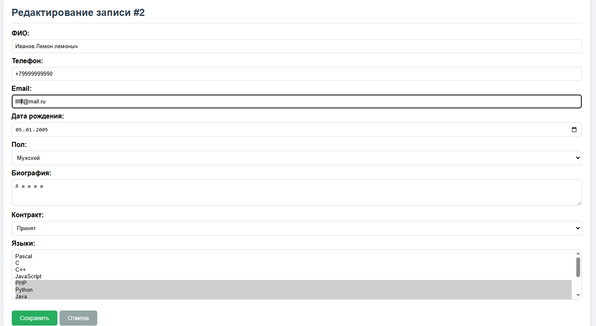
Проверка, что изменения действительно сохранились в базе данных.
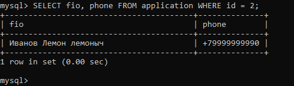
В админ-панели отображается статистика: общее количество пользователей и количество выбравших каждый язык.
SQL-запрос для статистики:
Результаты статистики:
- C: 1 пользователь
- C++: 1 пользователь
- Java: 1 пользователь
- JavaScript: 1 пользователь
- PHP: 1 пользователь
- Python: 1 пользователь
- Остальные (Clojure, Go, Haskell, Pascal, Prolog, Scala): 0
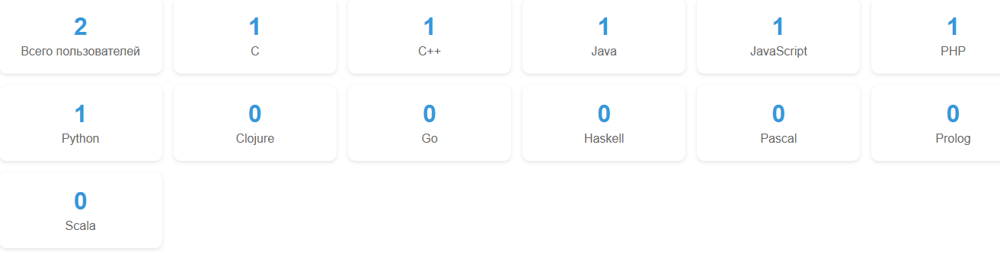
Проверка, что статистика в админ-панели совпадает с результатами прямого SQL-запроса.
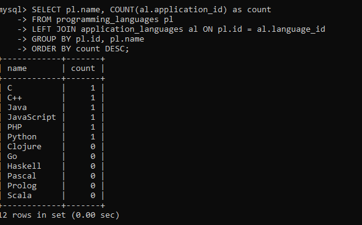
Данные администратора хранятся в отдельной таблице admins. Пароль хранится в виде MD5-хеша (32 символа).
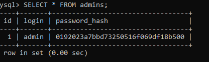
Принцип DRY (Don't Repeat Yourself) означает отсутствие дублирования кода.
Результаты проверки:
- Функции валидации определены ТОЛЬКО в index.php (8 функций)
- HTML-формы: form.php (пользовательская), admin.php (редактирования), login.php (входа) - каждая для своей цели
- Подключение к БД унифицировано во всех файлах
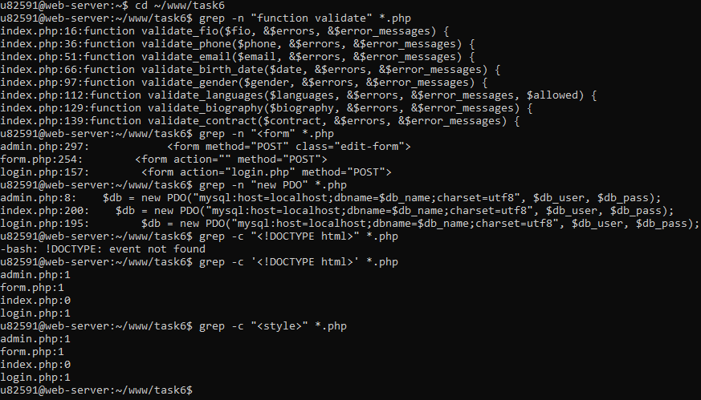
Принцип KISS (Keep It Simple, Stupid) означает простоту и понятность кода.
Результаты проверки:
- Классы отсутствуют (0 классов) - для проекта такого размера ООП избыточен
- Закомментированных TODO-блоков нет
- Мёртвого кода нет
- Файлы разделены по назначению: index.php (логика), form.php (представление), login.php (вход), admin.php (админка)
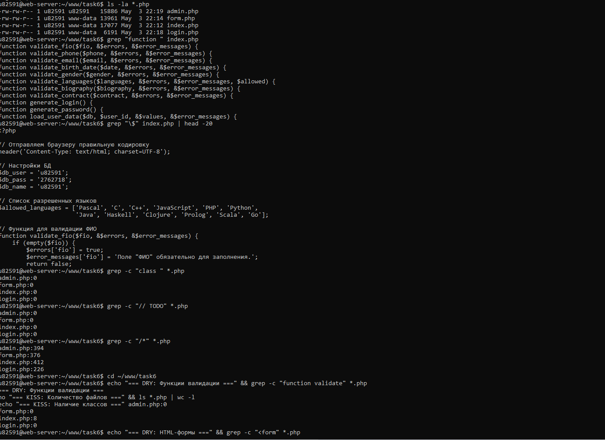
| 1 балл | Использование HTTP-авторизации | Выполнено |
| 1 балл | Отображение всех данных пользователей | Выполнено |
| 1 балл | Удаление данных администратором | Выполнено |
| 2 балла | Редактирование данных администратором | Выполнено |
| 1 балл | Вывод статистики по языкам | Выполнено |
| 1 балл | Хранение логина и хеша пароля в отдельной таблице | Выполнено |
| 1 балл | Соблюдение принципов DRY и KISS | Выполнено |
Все пункты задания выполнены успешно.